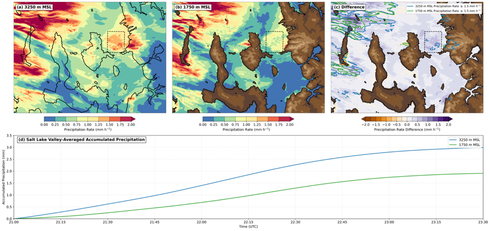
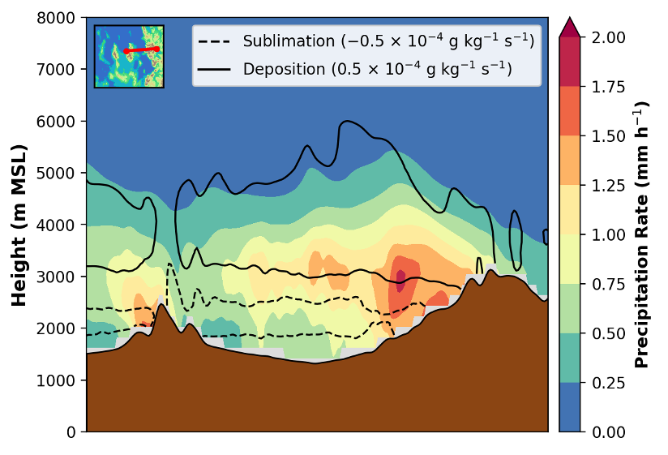

Outputting simulated accumulated precipitation at upper levels in WRF
This tutorial describes how to modify the WRF model source code to output a new 3D
variable, RAINNC3d, that stores accumulated total grid-scale precipitation
at every model level in addition to the standard surface output.
This tutorial is for the Thompson microphysics scheme and requires changes to four files:
Registry/Registry.EM_COMMONphys/module_mp_thompson.Fphys/module_microphysics_driver.Fdyn_em/solve_em.F
1 Modify the Registry
The WRF Registry (Registry/Registry.EM_COMMON) defines all model variables.
The surface accumulated precipitation is called RAINNC; add a new 3D
variable called RAINNC3d to store precipitation at all levels.
Add the following line to the registry:
#=========================================================
# Modified by Michael Wasserstein 2 Mar 2026 — precip at a upper levels
state real RAINNC3d ikj misc 1 - rh01du "RAINNC3d" \
"ACCUMULATED TOTAL GRID SCALE PRECIPITATION at levels" "mm"
#=========================================================
The ikj dimension specifier makes this a 3D variable covering all
horizontal grid points and all vertical levels in the domain, in contrast to the standard
RAINNC variable for surface precipitation, which only has ik.
2 Modify the Thompson Microphysics Scheme
The next step is to open the Thompson microphysics code,
phys/module_mp_thompson.F, and find every occurrence of
RAINNC and add the 3D counterpart alongside it.
Add RAINNC3d to the driver subroutine (line 979)
SUBROUTINE mp_gt_driver(qv, qc, qr, qi, qs, qg, ni, nr, nc, &
nwfa, nifa, nwfa2d, nifa2d, &
th, pii, p, w, dz, dt_in, itimestep, &
RAINNC, RAINNCV, &
RAINNC3d, & ! Michael Wasserstein Feb 24 2026
SNOWNC, SNOWNCV, &
GRAUPELNC, GRAUPELNCV, SR, &Declare RAINNC3d as a 3D intent variable (line 1022)
REAL, DIMENSION(ims:ime, jms:jme), INTENT(INOUT):: &
RAINNC, RAINNCV, SR
!..==================================================================
!.. Michael Wasserstein modified feb 24 2026 for precip at upper levels
REAL, DIMENSION(ims:ime, kms:kme, jms:jme), INTENT(INOUT):: &
RAINNC3d
!..==================================================================Declare local 3D accumulation arrays for each precipitating hydrometoer type (line 1078)
!=================================================================
!.. Modified by Michael Wasserstein to get precip at upper levels
!.. February 24, 2026
REAL, DIMENSION(its:ite, kts:kte, jts:jte) :: pcp_ra3d, pcp_sn3d, &
pcp_gr3d, pcp_ic3d
REAL, DIMENSION(kts:kte) :: pptrain3d, pptsnow3d, pptgraul3d, pptice3d
!=================================================================Initialize the 1D accumulators to zero (line 1163)
!================================================================
!.. Michael Wasserstein Feb 24 2026 edits
pptrain3d = 0.
pptsnow3d = 0.
pptgraul3d = 0.
pptice3d = 0.
!================================================================Pass the 3D arrays into mp_thompson (line 1232)
call mp_thompson(qv1d, qc1d, qi1d, qr1d, qs1d, qg1d, ni1d, &
nr1d, nc1d, nwfa1d, nifa1d, t1d, p1d, w1d, dz1d, &
pptrain, pptsnow, pptgraul, pptice, &
pptrain3d, pptsnow3d, pptgraul3d, pptice3d, & ! Wasserstein
#if ( WRF_CHEM == 1 )
rainprod1d, evapprod1d, &
#endifStore 3D results alongside the 2D accumulated precipitation (line 1244)
pcp_ra(i,j) = pptrain
pcp_sn(i,j) = pptsnow
pcp_gr(i,j) = pptgraul
pcp_ic(i,j) = pptice
!===========================================================
!.. Michael Wasserstein modified 24 feb 2026
do k = kts, kte
pcp_ra3d(i,k,j) = pptrain3d(k)
pcp_sn3d(i,k,j) = pptsnow3d(k)
pcp_gr3d(i,k,j) = pptgraul3d(k)
pcp_ic3d(i,k,j) = pptice3d(k)
enddo
!===========================================================
RAINNCV(i,j) = pptrain + pptsnow + pptgraul + pptice
RAINNC(i,j) = RAINNC(i,j) + pptrain + pptsnow + pptgraul + pptice
!===========================================================
!.. Michael Wasserstein modified 24 feb 2026
do k = kts, kte
RAINNC3d(i,k,j) = RAINNC3d(i,k,j) + pptrain3d(k) + pptsnow3d(k) + &
pptgraul3d(k) + pptice3d(k)
enddo
!===========================================================Update the mp_thompson subroutine signature (line 1491)
subroutine mp_thompson ( &
qv1d, qc1d, qi1d, qr1d, qs1d, qg1d, &
ni1d, nr1d, nc1d, nwfa1d, nifa1d, &
t1d, p1d, w1d, dzq, &
pptrain, pptsnow, pptgraul, pptice, &
pptrain3d, pptsnow3d, pptgraul3d, pptice3d, & ! WassersteinDeclare the 3D variables in the subroutine (line 1515)
REAL, INTENT(INOUT):: pptrain, pptsnow, pptgraul, pptice
! Michael Wasserstein Feb 26 2026
REAL, DIMENSION(kts:kte), INTENT(INOUT):: &
pptrain3d, pptsnow3d, pptgraul3d, pptice3d
The microphysics scheme accumulates precipitation for each hydrometeor type (rain,
ice, snow, graupel) based on whether the mixing ratio exceeds a threshold
R1 and using the sedimentation rate at each level. Add the following
loop after each existing 2D accumulation line.
Rain accumulation at each level (line 3522)
if (rr(kts).gt.R1*1000.) &
pptrain = pptrain + sed_r(kts)*DT*onstep(1)
!.. Michael Wasserstein edits Feb 24 2026
do k = kte, kts, -1
if (rr(k).gt.R1*1000.) &
pptrain3d(k) = pptrain3d(k) + sed_r(k)*DT*onstep(1)
enddoIce accumulation at each level (line 3580)
if (ri(kts).gt.R1*1000.) &
pptice = pptice + sed_i(kts)*DT*onstep(2)
!.. Michael Wasserstein edits Feb 24 2026
do k = kte, kts, -1
if (ri(k).gt.R1*1000.) &
pptice3d(k) = pptice3d(k) + sed_i(k)*DT*onstep(2)
enddoSnow accumulation at each level (line 3615)
if (rs(kts).gt.R1*1000.) &
pptsnow = pptsnow + sed_s(kts)*DT*onstep(3)
!.. Michael Wasserstein edits Feb 24 2026
do k = kte, kts, -1
if (rs(k).gt.R1*1000.) &
pptsnow3d(k) = pptsnow3d(k) + sed_s(k)*DT*onstep(3)
enddoGraupel accumulation at each level (line 3649)
if (rg(kts).gt.R1*1000.) &
pptgraul = pptgraul + sed_g(kts)*DT*onstep(4)
!.. Michael Wasserstein edits Feb 24 2026
do k = kte, kts, -1
if (rg(k).gt.R1*1000.) &
pptgraul3d(k) = pptgraul3d(k) + sed_g(k)*DT*onstep(4)
enddo3 Modify module_microphysics_driver.F
Open phys/module_microphysics_driver.F and search for every occurrence
of rainnc, adding RAINNC3d alongside each one.
Add to the microphysics_driver subroutine signature (line 95)
,rainnc, rainncv &
,RAINNC3d & ! Michael Wasserstein 2/24/26Declare the variable in the subroutine (line 676)
REAL, DIMENSION( ims:ime , kms:kme, jms:jme ) :: RAINNC3d ! Michael Wasserstein Mar 2 2026Pass RAINNC3d in the microphysics driver call (line 1055)
RAINNC=RAINNC, &
RAINNCV=RAINNCV, &
RAINNC3d=RAINNC3d, & ! Michael Wasserstein 3d rainAnd again at line 1134
RAINNC3d=RAINNC3d, & ! Michael Wasserstein 3d rain4 Modify solve_em.F
Open dyn_em/solve_em.F. The microphysics driver is called near
line 3603. Only one small addition is needed at line 3692 to pass the
new variable through:
& , RAINNC=grid%rainnc, RAINNCV=grid%rainncv &
& , RAINNC3d=grid%rainnc3d & ! Michael Wasserstein Feb 24 20265 Reconfigure and Recompile
After making all modifications, reconfigure and recompile WRF. Once the model
is rerun, the output will contain a new variable RAINNC3D giving the
effective accumulated precipitation at every vertical level in the domain.
Applications: Sub-Cloud Sublimation
One key use of RAINNC3D is diagnosing sub-cloud sublimation — the
loss of precipitation between upper levels and the surface. For example, comparing
the effective precipitation rate at 3250 m MSL (~2000 m AGL)
to the rate at 1750 m MSL (~500 m AGL) can reveal how much
precipitation evaporates before reaching the ground.

Effective precipitation rates at 3250 m MSL are generally between 0.75 and 1.75 mm h−1 over the Salt Lake Valley, while rates at 1750 m MSL are systematically lower due to sub-cloud sublimation. This reduction is apparent in both the difference map (Fig. 1c) and the accumulated precipitation time series (Fig. 1d), where the upper-level accumulation (blue) consistently exceeds the near-surface accumulation (green).

The cross-section in Fig. 2 shows the highest effective precipitation rates near 3000 m MSL, decreasing with height loss toward the surface. Sublimation is greatest between roughly 1800 and 2500 m MSL over the Salt Lake Valley, consistent with the dashed contour in Fig. 2.